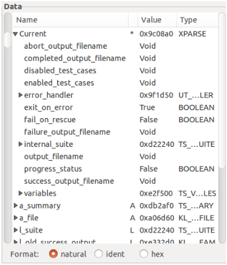

The Data part consists of two subparts: a tree displaying objects and their fields and a row of buttons.

Figure 6: The Data part. The * in the second column denotes the Current object and A and L denote a routine argument or local variable, resp., the other contents should be clear.
The tree displays the result of expressions in hierarchical order: fields of an object may be displayed as subtrees. The nodes of the tree contain the name of the object or field, its category (see below), its value, and its type. The category is a single letter meaning
The tree is filled the following ways:
The format of the data values is controlled by the radio buttons on the bottom of the Data part:
The fields of a value of a SPECIAL type get a C inspired name: the field index enclosed in brackets. The type name of a SPECIAL[ITEM_TYPE] object having count items is written like
count of ITEM_TYPE
The fields of a value of a TUPLE type get the name of their label if the object itself has been declared as TUPLE type with labels, otherwise the names are item_1 etc.
Values of agent objects are more peculiar. They are considered to be of an own anonymous type that conforms to ROUTINE, FUNCTION, or PREDICATE. The fields of such a type are its closed arguments and (in case of a FUNCTION) its result value, the field names are the argument names of the agent’s routine for the closed arguments or Result for agent’s result value. Since the type is anonymous, the type name in the table is automatically generated such that it is guaranteed a unique and otherwise invalid type name: it is composed like
agent type.routine(args)
where type is the name of the agent’s base type (enclosed in braces if the target is an open argument), routine denotes the feature called (the routine name in case of a call agent, otherwise another automatically generated name), and args is a comma separated list of question marks and underscores indicating open and closed arguments, respectively. The routine of an inline agent looks like _integer_routine where routine is the name of the routine declaring the agent and integer is simply a counter (observe the leading underscore of the resulting name). The args include both the open and closed arguments to show how open and closed arguments are distributed in the resulting feature call, this choice makes also the generated type name unique.
A final remark on the presentation of data whose underlying class is excluded from debugging. If a special treatment of the data is provided as described above (i.e. for basic expanded types, SPECIALs, TUPLEs, and agents) then this treatment applies (the associated meta-information is not discarded), otherwise, no attributes are shown. Similarly, if the routine of the selected call stack level belongs to such a class then arguments, local variables, object test variables, and across iterators are not shown, only Current is shown (that in turn has no attributes).
A single row in the data tree (provided its category is an attribute or a local variable) can be selected by left clicking. The associated value may then become the source of a breakpoint’s Watch condition or the target of an assignment from the Evaluation part.
Left clicking on a row showing an object of a SPECIAL type has a second effect. The scrollbar at the left edge of the Data part becomes sensitive and the possible very many array items can be scrolled within the tree of objects (the scrollbar at the right edge has the usual effect of scrolling the whole tree). The number of array items shown can be set by menu item Preferences → Data settings.
A right click on a row (columns Name …Value) opens a pop-up menu showing first an empty line for the value itself then all queries of its dynamic type. Selecting a menu item inserts it into the Expr field of the Evaluation part. There the query may be treated as any other expression. Arguments of functions are indicated as bullets, they have to be replaced by meaningful expressions before the resulting expression can be computed. In particular, the right operand of infix operators is indicated by a bullet while its left operand is the data clicked, and so is the unique operand of prefix operators.
A right click on a row in column Type opens a pop-up menu showing the typeset of the row’s data (i.e. types of source expressions that can be assigned to the data such that forthcoming resolution of dynamic dispatch will work) if assignment is supported and if this set is not trivial (e.g. not for expanded types). The menu is for information display only, selecting an item has no effect.
More Data windows can be opened from menu Window → New data, they contain the data tree and additionally a combobox on top to select a stack level and the buttons manually/automatic, Update, Close on bottom. These windows and the Data part on the main window work independently of each other. After stopping the debuggee the main Data part is automatically updated, not the additional Data windows if manually is selected (in case of automatic they are updated like the main Data window). This way, it is possible to have at the same time a look at the actual values and at previous values. An additional Data window is synchronized to the main Data window when its Update button is clicked. As long as the window is not synchronized manipulation of data and stack is not possible, the window simply shows what was shown in the last synchronized state. Moreover, a right mouse click works similarly as in the Data part if the stack level is not below the Data part’s stack level (and, of course, if the window is synchronized): the selected query is inserted into the Evaluation part with the necessary leading ^ characters added (see Sec. 4.1 for the meaning of these characters).
A similar structure has the additional window opened from menu Window → Global data. It shows the values of constant attributes (indicated by C), once functions (if already computed), and the initialization status of any once routine (indicated by O); the latter are struck through if not yet initialized. The data are arranged class by class, and the window’s table has an additional column showing the name of the defining class. The table can be searched for items: pressing Control-f opens a text field where a string can be entered, then any constant attribute and once routine whose name starts with this string will be highlighted.